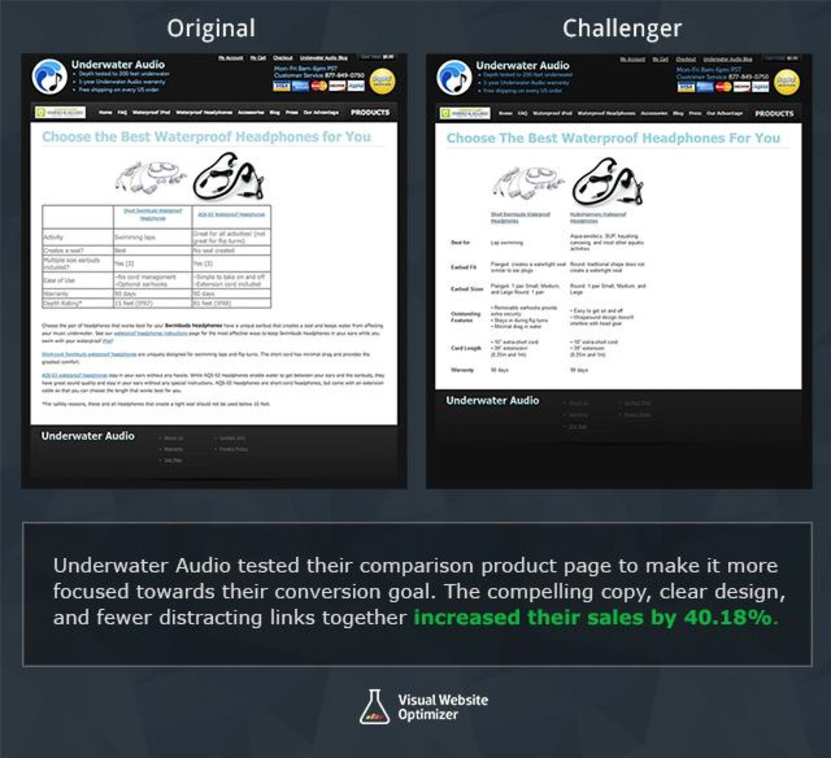
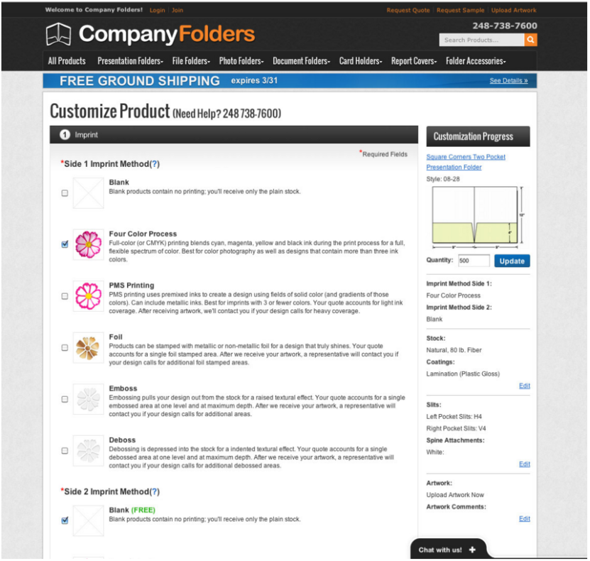

E-Commerce Case Studies
- The fundamentals of E-Commerce are open for interpretation where different organizations form their own system around these fundamentals, based on the scope of their business. However, sometimes these systems are ineffective so much as so that it warrants a re-design/refactor of said system.
Underwater Audio: Reduced Distractions
A notable organization, that is utilizing E-Commerce; “Underwater Audio”, bumped their sales by an extortionate 41%. This is a company that specializes in sales of audio equipment, mostly headphone and earphones, along with IEM types of earphones too.
Through streamlining their content, they were able to get this 41% bump in sales. The below example shows the difference between the two versions of their products page, where a table was simplified, repeated text at the bottom was removed, and the comparison information was made clearer
Ensuring the intentions of products are clear is the key to getting more conversions on your E-Commerce store, in this case it was streamlining the textual information to make it easier to compare the products. To quote the CEO of Underwater Audio: “the simplest solution is often the best”, which is precisely the solution that worked in this scenario.
Users that visit this page will now be able to compare these products and form a versed opinion on which is (most) appropriate for their situation. Doing so will exponentially increase the chance that this user will be converted into a consumer, therefore, making the business more money.
Company Folders: Reduced Website Friction
Another organization worth analyzing is “Company Folders”; where they specialize in the manufacturing, customization, and selling file folders. They had increased their conversion rate by 68%.
Their main problem, that they had remedied, was their online quote function which is a vital part of their marketing funnel. In making this process as smooth as possible, it would essentially lead to driving more sales for the business. This was perceived as a relatively simple task, however, there are over 15 million product combinations that a user can customize with. Additionally, there was a large portion of users leaving the form uncompleted, which (probably) demonstrated that it was a much too complex process for the user as well.
Prior to surveying their best customers, they had assumed that making the form conform to the size of one page would help improve prospects, however, after surveying their best customers, they found out that a full redesign was more appropriate. Company Folders approached the situation with a single-step process and had broken the (below example) form down into a more “bite-sized” chunks that all fell into an exclusive category. Doing so increased their conversion rates by 61%.
Keeping people focused, thus increasing conversions is possible by breaking complicated systems down into manageable steps. In spite of the fact that additional clicks can often be viewed as a new opportunity to lose customers, Company Folders offers the suggestion of simplifying to one-page forms for now.